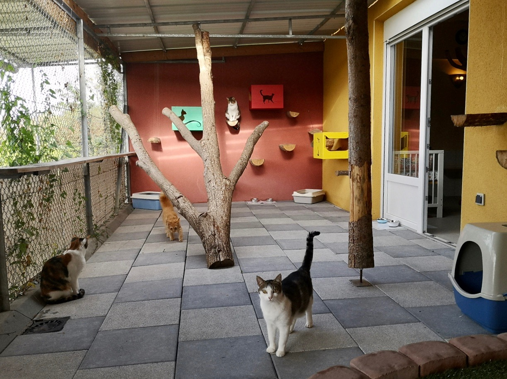
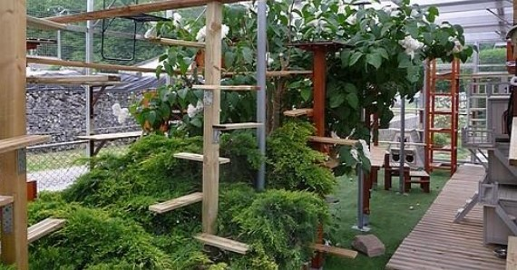
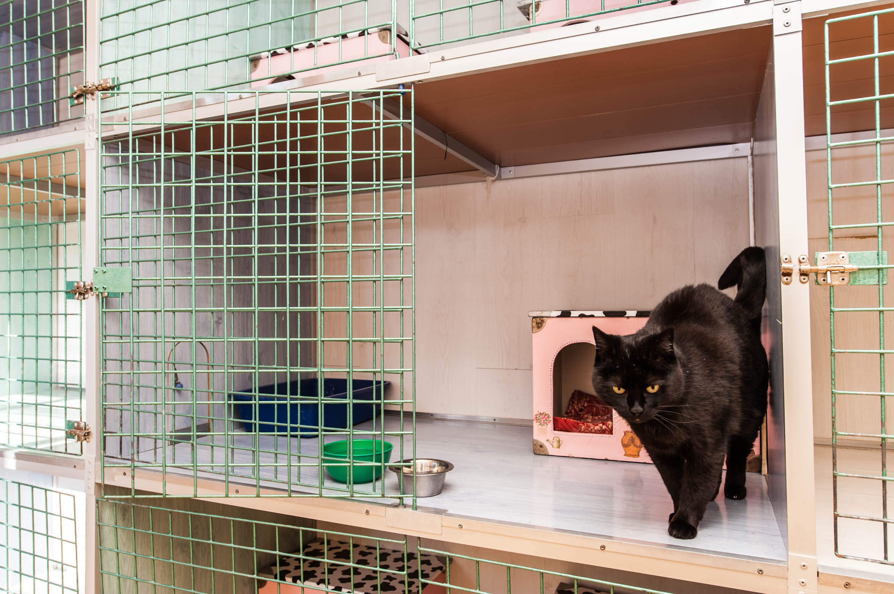
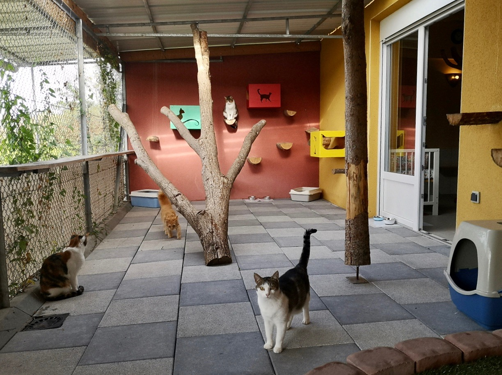
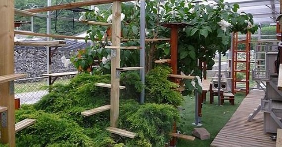
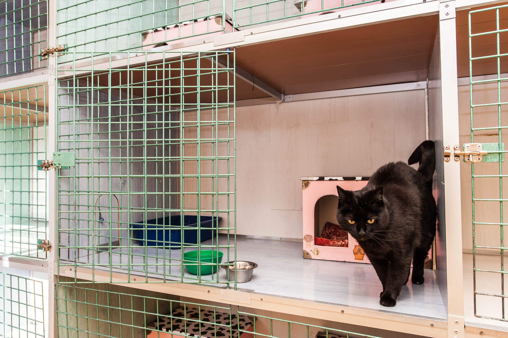
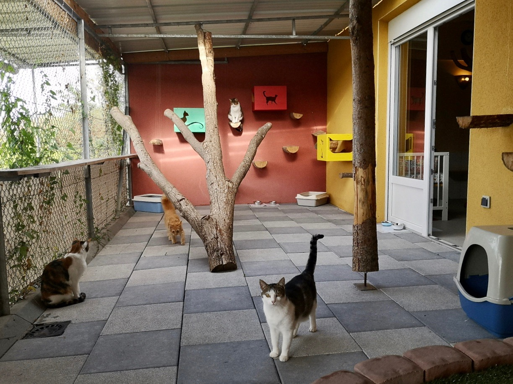
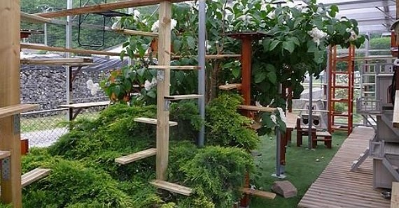
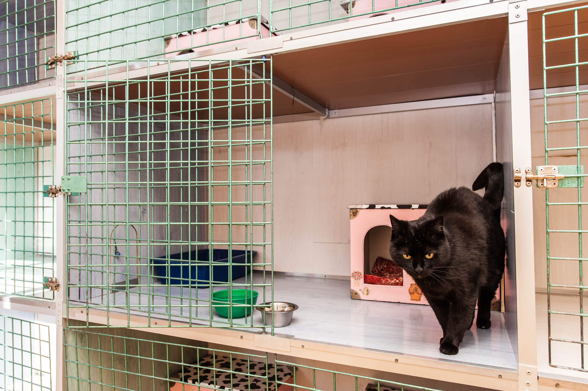
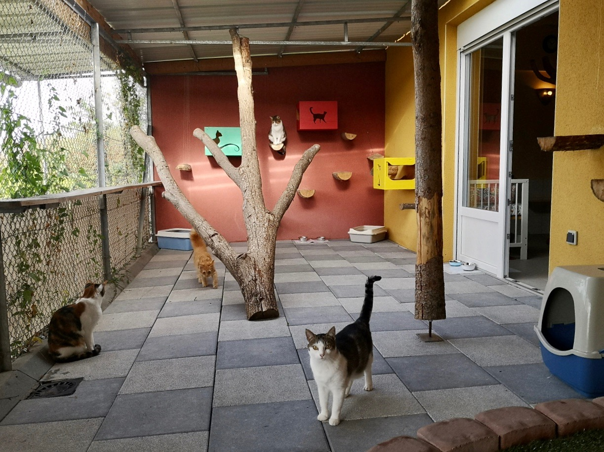
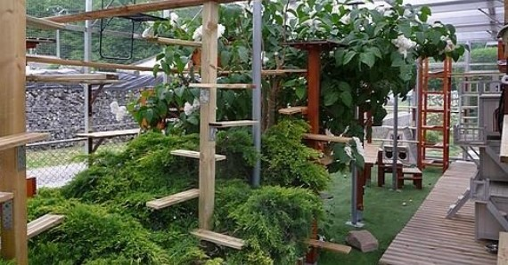
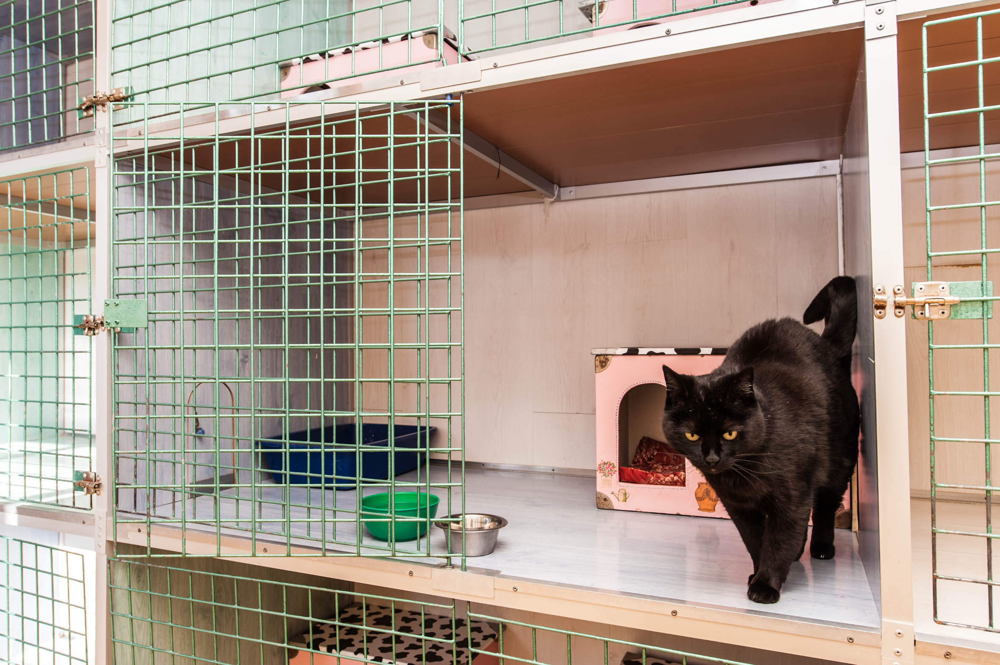
Depuis 1976, les pensions « La mise au vert » offrent des services exceptionnels pour le bien-être de vos chiens et chats. Notre engagement envers la qualité, l'expérience et la passion fait de nous le choix idéal pour prendre soin de vos compagnons.
Voici ce que disent nos clients satisfaits :
Chez « La mise au vert », nos valeurs fondamentales guident notre travail quotidien :